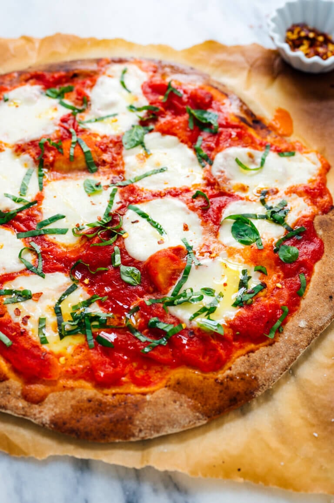

Margherita Pizza

Description
Pizza always makes a bad day feel better, and there’s nothing nicer than a perfect slice of margherita pizza. Now you can make this recipe at home any time the craving strikes!
Pizza margherita, as the Italians call it, is a simple pizza hailing from Naples. When done right, margherita pizza features a bubbly crust, crushed San Marzano tomato sauce, fresh mozzarella and basil, a drizzle of olive oil, and a sprinkle of salt. That is all.
Ingredients
- 1 batch easy whole wheat pizza dough or 1 pound store-bought pizza dough
- 1 large can (28 ounces) whole San Marzano tomatoes
- 12 ounces (dry weight) ovoline-type mozzarella or other fresh mozzarella balls, ideally water-packed
- Handful of fresh basil, thinly sliced plus small leaves
- Additional garnishes: Drizzle of extra-virgin olive oil, flaky sea salt or kosher salt and optional red pepper flakes
Steps